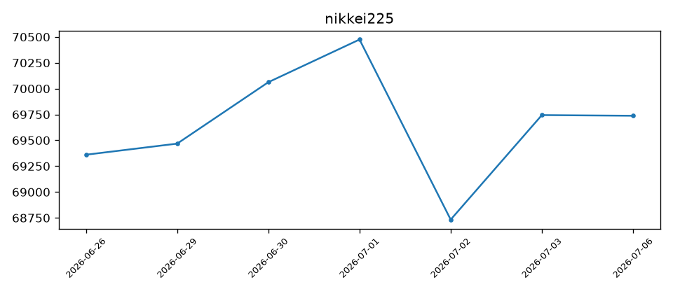
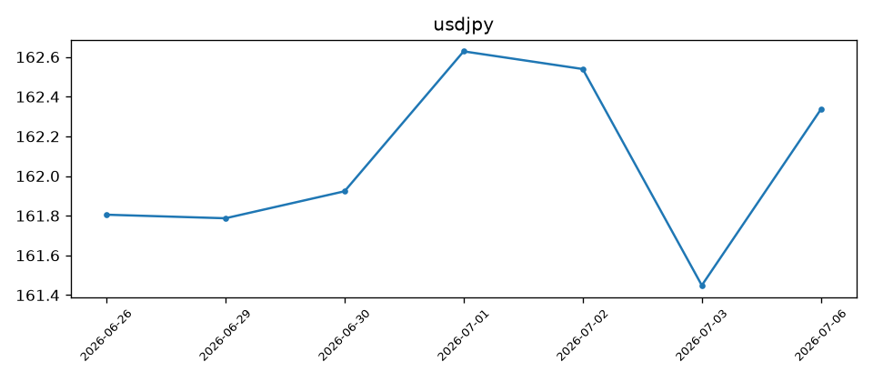

# 本日の市場分析コメント ## 日経平均株価 本日(7月6日)の終値は**69,737円**と、前営業日比でほぼ横ばい(-6円程度)の推移となりました。直近の値動きを振り返ると、7月1日に**70,474円**まで上昇して高値圏をつけた後、7月2日には**68,733円**まで約1,740円の急落を記録しています。その後、7月3日にかけて**69,744円**まで反発し、本日はその水準を維持する形で落ち着いた展開となっています。 70,000円の大台を挟んだ攻防が続いており、月初の乱高下を経て、目先は方向感を探る調整局面に入っている様子がうかがえます。 ## ドル円相場 本日のドル円は**162.34円**と、前営業日(7月3日:161.45円)から約90銭の円安・ドル高方向に振れました。この30日間では概ね**161円台〜162円台後半**のレンジ内で推移しており、7月1日には**162.63円**まで円安が進む場面も見られました。 ## 市場全体の観察 - 株式・為替ともに、7月初旬に一時的なボラティリティの高まりが見られましたが、本日は相対的に落ち着いた地合いとなっています。 - ドル円が円安方向に戻す一方で、日経平均が横ばいにとどまった点は、輸出関連への追い風が限定的であった可能性を示唆しますが、材料の乏しさから様子見姿勢が強まったとも解釈できます。 なお、本日は参照可能なXの投稿が確認されなかったため、市場心理に関する定性的な補足は割愛いたします。 --- ※本コメントは客観的な市場データに基づく観察であり、特定の投資行動を推奨するものではありません。


投稿がありません。